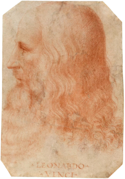

Leonardo di ser Piero da Vinci (15 April 1452 – 2 May 1519) was an Italian polymath of the High Renaissance who was active as a
Born out of wedlock to a successful notary and a lower-class woman in, or near, Vinci, he was educated in Florence by the Italian painter and sculptor Andrea del Verrocchio. He began his career in the city, but then spent much time in the service of Ludovico Sforza in Milan. Later, he worked in Florence and Milan again, as well as briefly in Rome, all while attracting a large following of imitators and students. Upon the invitation of Francis I, he spent his last three years in France, where he died in 1519. Since his death, there has not been a time where his achievements, diverse interests, personal life, and empirical thinking have failed to incite interest and admiration, making him a frequent namesake and subject in culture.
Revered for his technological ingenuity, he conceptualised flying machines, a type of armoured fighting vehicle, concentrated solar power, a ratio machine that could be used in an adding machine, and the double hull. Relatively few of his designs were constructed or were even feasible during his lifetime, as the modern scientific approaches to metallurgy and engineering were only in their infancy during the Renaissance. Some of his smaller inventions, however, entered the world of manufacturing unheralded, such as an automated bobbin winder and a machine for testing the tensile strength of wire. He made substantial discoveries in anatomy, civil engineering, hydrodynamics, geology, optics, and tribology, but he did not publish his findings and they had little to no direct influence on subsequent science.